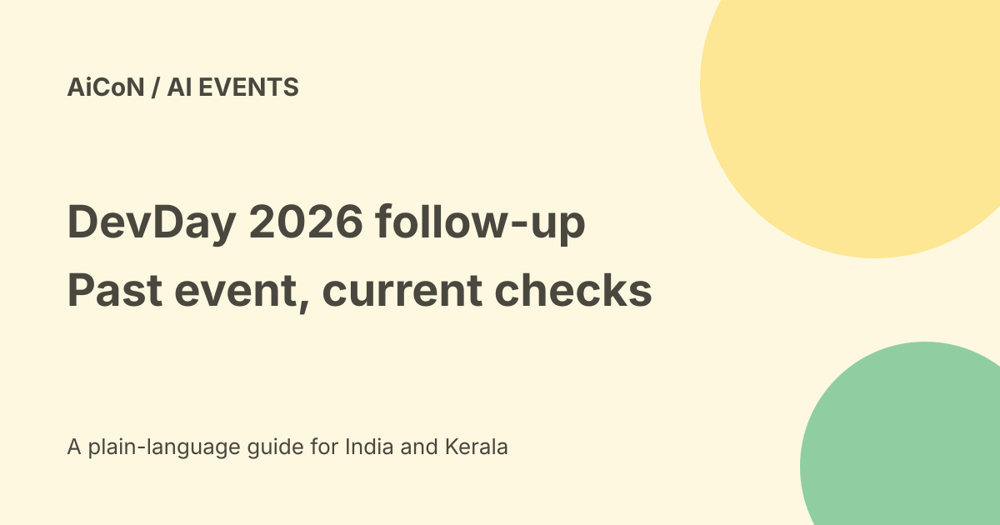

OpenAI DevDay 2026: the past event, recap and India follow-up
OpenAI DevDay 2026 was scheduled for 29 September in San Francisco. That date has passed. The old AiCoN posts saying tomorrow are now archive context, not a fresh reminder or a claim that the event is happening today.

What the original posts were about
The two September 28 posts described a developer event with a free online keynote and an India viewing time. OpenAI's event page lists Tuesday, 29 September 2026 at Fort Mason in San Francisco.
Its published schedule lists the opening keynote at 10 am Pacific Time. On that date, 10 am Pacific Daylight Time converted to 10:30 pm India Standard Time. This calculation explains the old post; it is not a new viewing appointment.
Use the official recap now
OpenAI has a DevDay 2026Recap page dated 29 September. The checked page describes more than 20 announcements across GPT-6 Astra, ChatGPT, Codex, APIs, security and developer tools.
Use that official recap as the starting point for follow-up. This guide does not repeat every launch detail or infer that every preview is free, globally available or ready for production.
Why the old reminder form is not enough
The event site still contains future-looking wording about livestream reminders and recordings being posted shortly afterwards. A page can keep old registration copy after its event date.
Do not submit a reminder form expecting a second September 29 keynote. The existence of a form does not make the past date current. We did not register, book a ticket or verify every session recording.
What about Bengaluru?
The official event page lists DevDay Exchanges for Bengaluru, Tokyo, Seoul, Paris, Berlin, London, São Paulo and Mexico City. It invites readers to sign up for updates about events later in the year.
That wording does not establish a Bengaluru date, confirmed admission, venue or cost. The original short post called applications open, but the current page's update sign-up should not be treated as a guaranteed event place. Check the live official city details before planning travel.
Free and paid boundaries
The published event FAQ calls the online keynote free and open to everyone. That supports the old online-access description, not a free conference ticket or free use of every product announced.
API usage, subscriptions, travel and local events can have separate charges. No ticket checkout or India event fee was tested.
A useful way to review launch news
- Open the official recap rather than a forwarded launch list.
- Select the product that is relevant to your work.
- Read that product's current documentation and pricing.
- Check preview status, account eligibility, geography and usage limits.
- For coding or account tools, read permissions and data handling.
- Try a small non-sensitive example before a production change.
- Keep announcement dates separate from dates when access actually reaches your account.
A forum post or video comment can point to a lead, but it is not proof of an official announcement. Do not forward an unverified claim simply because the forum uses the company's name.
What changed since the original post?
Both short reminders are merged into this one guide. We remove the now-stale tomorrow wording, retain the calculated original India time as history, link the official recap and narrow the Bengaluru claim to the verified update wording.
Frequently asked questions
Is DevDay happening tomorrow?
No. The September 29 date described in these archive posts has passed.
Was the keynote free online?
The official FAQ says it was free and open to everyone.
Can I assume a Bengaluru seat is confirmed?
No. Check the city's current official details and your admission status.
Is every announced tool free?
No. Read each product's current terms and prices.
Sources: Official event schedule and FAQ · Official2026recap · Official event announcement. Checked 7 October 2026.